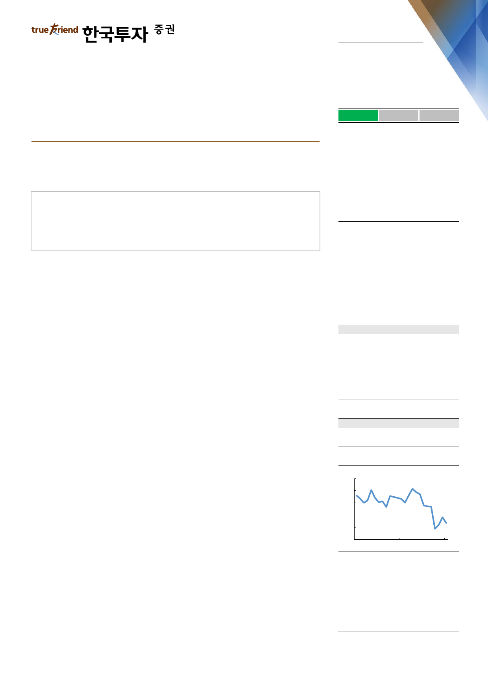

실적 Review
2019. 2. 1
아모레퍼시픽(090430)
하 회
부 합
영업이익의 컨센서스 대비를 의미
상 회
상반기 중 내수 회복이 숙제
중립(유지)
내수 부진과 비용 요인으로 예상을 크게 하회한 영업 실적
럭셔리 사업 가능성과 글로벌화 진전은 고무적
실적의 key인 내수 시장 회복이 상반기 확인 요인
Facts : 비수기에 선제적 비용 집행 가세하며 컨센서스 하회
4분기 영업이익은 전년대비 69% 감소한 238억원(영업이익률 1.9%, -4.8%p
YoY)을 기록, 컨센서스를 62% 하회했다. 전사적으로 마케팅 비용이 크게 증가했
고 재고 관련 충당금이 발생한 것으로 파악된다. 국내 화장품은 30억원 영업이익
에 그쳤고(-94% YoY), 해외 화장품 매출액과 영업이익은 5,460억원(+7% YoY)
과 535억원(+31% YoY, 영업이익률 9.8%, +1.7%p YoY)을 기록했다. 국내 생
활용품 부문에서도 180억원 영업손실을 기록해 부진했다.
Pros & cons : 프리미엄으로의 변화 과정 vs 저하된 국내 경쟁력
실적의 핵심은 면세점, 내수, 중국 사업이다. 면세점 매출액이 중국인 인바운드 관
광객 회복 및 면세점 시장 호조, 구매 제한 완화에 힘입어 전년대비 48% 증가했
다. 중국 매출액은 약 8% 증가에 그친 것으로 추정되나 설화수가 40%대 성장했
다. 면세뿐 아니라 중국에서도 성장 축이 설화수로, 프리미엄 위주의 포트폴리오로
의 변화가 진행되는 것으로 판단된다. 해외사업은 중국에서의 공격적인 마케팅 집
행에도 럭셔리 브랜드 비중 상승과 동남아 고성장(20% 이상), 그리고 미주와 유
럽에서의 영업손실 축소에 힘입어 손익 또한 양호했다. 한편 면세를 제외한 국내
매출액은 전년대비 18% 감소했다. 대부분 유통 채널에서 부진했지만 전문 채널인
‘아리따움’ 매출액이 20% 이상 감소하며 특히 부진했다. ‘아리따움’은 멀티브랜드
샵으로의 전환 등, 경쟁력 강화를 위한 노력이 진행되고 있다. 상기 노력의 성과를
지켜볼 필요가 있으나 상반기 중 회복 여부가 가시화되기는 쉽지 않아 보인다.
Action : 상반기 내수 회복 여부가 실적 회복의 key
국내 수익성 저하를 반영, 2019년 실적 추정을 하향한다. 2019년 PER은 29배
로, 글로벌 7개사 평균 25배보다 높다. 투자의견 ‘중립’을 유지한다. 내수 부진, 중
국 성장통, 해외 투자 비용 등 실적 부진 요인의 대부분은 가시화되었다. 한편, 수
익성 회복을 위해서는 국내 사업 회복이 필요하다. 향후 관전 포인트는 강한 중국
인 관광객 회복 또는 브랜드/채널 경쟁력 회복이다. 이에 중국 내 고성장을 이끌어
갈 수 있는 고가 위주의 브랜드 포트폴리오로의 변화, 그리고 중국 외 추가 성장을
견인할 수 있는 글로벌 사업 속도를 지켜볼 필요가 있다.
Stock Data
KOSPI(1/31)
2,205
주가(1/31)
181,500
시가총액(십억원)
10,610
발행주식수(백만)
58
52주 최고/최저가(원)
351,500/150,000
일평균거래대금(6개월, 백만원)
58,559
유동주식비율/외국인지분율(%)
52.4/33.2
주요주주(%) 아모레퍼시픽그룹 외 3 인 47.6
국민연금
6.1
Valuation 지표
PER(x)
PBR(x)
ROE(%)
DY(%)
EV/EBITDA(x)
EPS(원)
BPS(원)
2017A
53.3
5.1
9.8
0.4
23.2
5,711
60,206
2018F
37.9
2.8
7.7
0.7
14.6
4,790
63,694
2019F
29.1
2.7
9.4
0.8
12.8
6,231
68,422
주가상승률
절대주가(%)
KOSPI 대비(%p)
1개월
(13.4)
(21.4)
6개월
(32.1)
(28.2)
12개월
(39.4)
(25.3)
주가추이
(천원)
400
340
280
220
160
100
Jan-17
자료: FnGuide
Jan-18
Jan-19
나은채
ec.na@truefriend.com